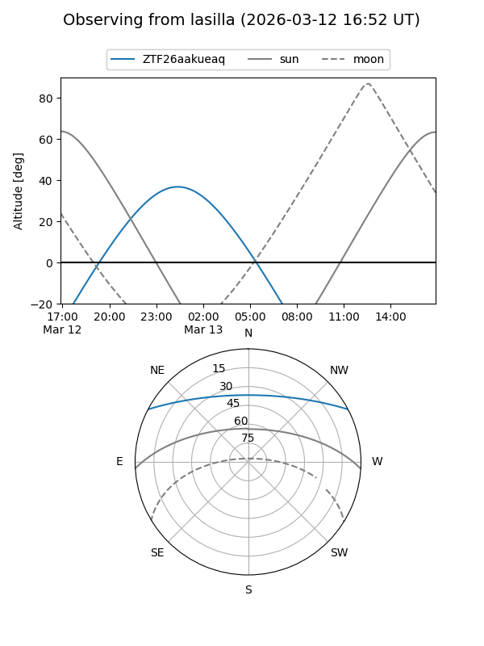
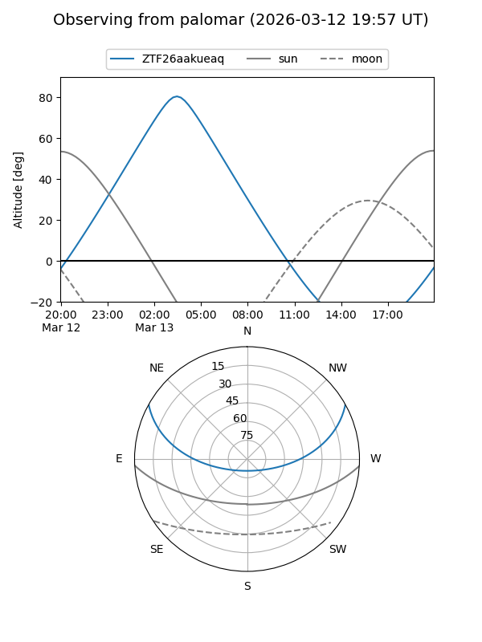

ZTF26aakueaq
Target ZTF26aakueaq at 2026-03-13 04:14
Aliases and brokers:
FINK: link
Lasair: link
ALeRCE: link
alt names
ZTF26aakueaq (ztf,fink_ztf)
Coordinates:
equatorial (ra, dec) = 105.1862,+23.94120
equatorial (HMS+DMS) = 07:00:44.70,+23:56:28.31
galactic (l, b) = (192.2779,+12.59518)
Flags:
Photometry:
last ztfg=17.74
1 ztfg detections
Lightcurve
Visibility


Additional plots